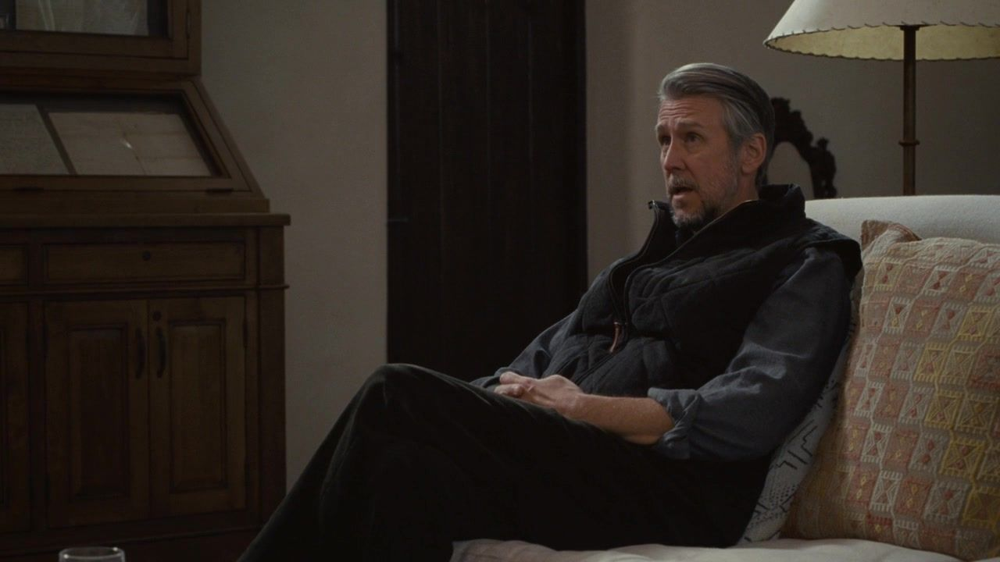
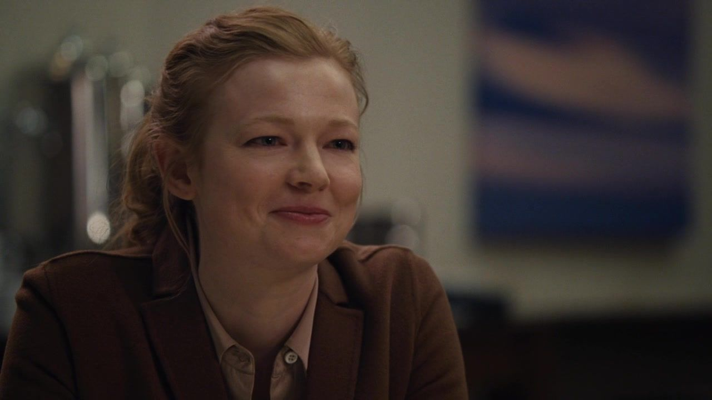
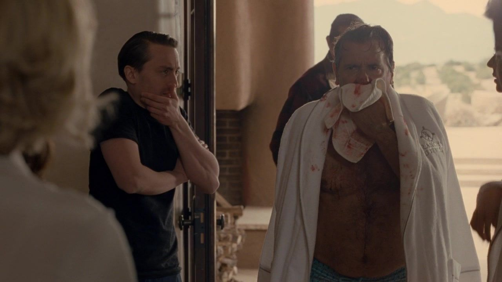
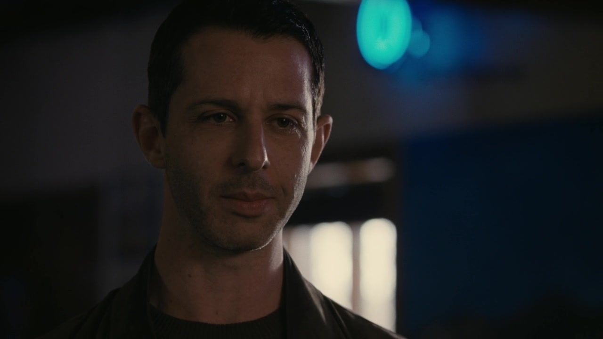
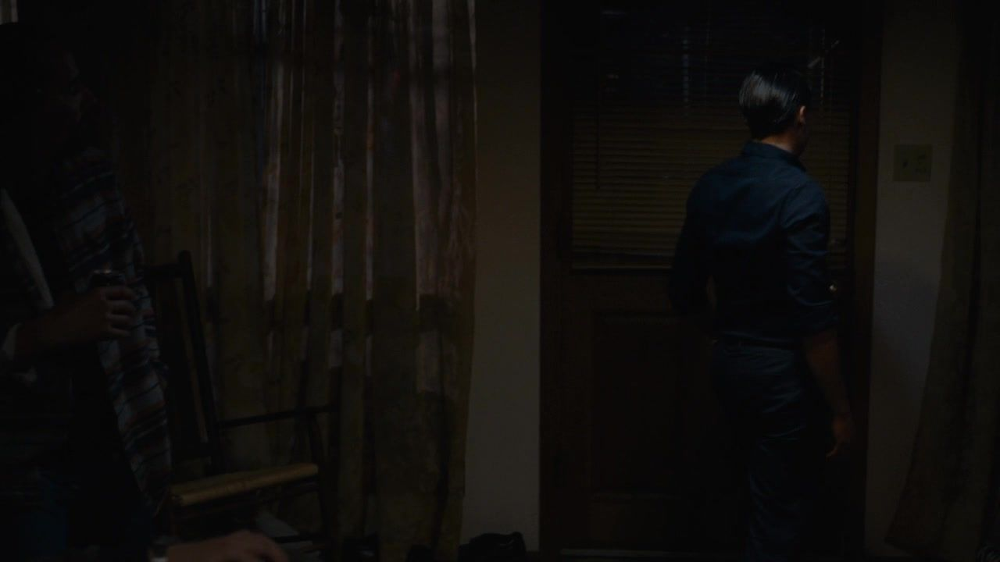
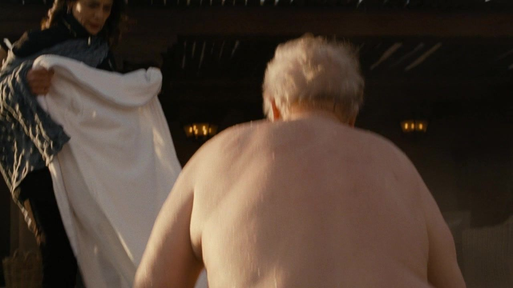

01 / THE STORY
一场家庭治疗，
九个被绕开或说破的时刻。
按本集主线分为三幕；并行发生的谈话与善后，保留其交错关系。
NINE TURNSIACT I / SCENES 01—03
被安排的和解家族想让外面看见一张合照。
01纽约 / 被写在报道里的肯德尔
他还没复吸，故事已经替他复吸了。
剧情事实肯德尔与家族失联并就解职采取行动，媒体提前出现其复吸说法，他与拉瓦之间的信任因此继续承压。 [1] [2]
这一场为什么重要 个人解读
家族拥有的影响不只用于公开声明，也能塑造一个人被别人理解的方式。肯德尔需要反驳报道，反驳又容易显得像失控者的自辩。这种困境加重压力，却不能简化成任何后来伤害都由父亲单独造成。
权力的变化叙事权先影响他与他人的关系。
新墨西哥 / 康纳牧场
治疗开始之前，公关目的已经进门。
 ↗家人在牧场客厅参加家庭治疗。｜HBO · 本集截图
↗家人在牧场客厅参加家庭治疗。｜HBO · 本集截图剧情事实洛根安排家人在康纳的牧场接受治疗，试图修复外界对家族关系的观感；肯德尔起初没有参加。 [1] [2]
这一场为什么重要 个人解读
治疗需要相信在这里说话不会被立即拿去对付自己，而这家人正缺少这种安全。公关目的使真话更加困难：一句不利于父亲的话，可能同时被听成破坏家庭与破坏公司形象。
权力的变化共同空间搭好了，安全的表达条件没有搭好。
治疗中 / 洛根的回应
他反复说为了孩子，不肯再往自己里面走。

↗洛根在家庭治疗中回应问题。｜HBO · 本集截图剧情事实洛根表示自己一生所做都为了孩子，面对进一步追问仍重复类似说法；子女与治疗师难以让谈话深入。 [1] [2]
这一场为什么重要 个人解读
这句话未必全是假话，却可以变成不再需要回答具体问题的盾牌。只要所有行为先被归入爱，受伤的人就很难指出某次行动的伤害。治疗要求的不是一句足够动听的总说明，而是愿意面对自己究竟做过什么。
权力的变化爱的概括遮住了行为的细节。
这一幕之后父亲接受治疗的形式，却仍试图控制叙述；真正的承认迟迟没有发生。
IIACT II / SCENES 04—06
各自离开现场政治、药物与失败的专业边界。
04牧场之外 / 希芙见吉尔
她要的独立，正好也会刺痛父亲。

↗希芙与吉尔谈政治工作时的反应镜头。｜HBO · 本集截图剧情事实在内特牵线下，希芙会见反对洛根与其媒体影响的参议员吉尔，认真考虑加入竞选工作，并与内特发生亲密接触。 [1] [2]
这一场为什么重要 个人解读
她的职业选择有真实的政治内容，也带着摆脱父亲定义的需要。两者不必互相取消。可当工作与旧情重新缠在一起，独立并不只是换一位权威靠近，还需要面对自己对汤姆承诺的边界。
权力的变化外部事业给她出口，也带来新的亲密责任。
牧场 / 治疗师的事故
被请来主持秩序的人，也失去了判断。

↗治疗师在泳池跳水受伤后被人照看。｜HBO · 本集截图剧情事实治疗师跳入浅池受伤，家庭治疗的安排被打断。洛根此前也拒绝更深入参与。 [1] [2]
这一场为什么重要 个人解读
喜剧并未证明所有心理治疗都荒谬，而是让这个被当作形象工具的现场彻底失去权威。父亲可以借事故继续不谈，家人却并没有因此不再需要帮助。一个主持者的失败，不会自动让伤口变得不真实。
权力的变化专业形式崩塌，原来的问题仍留在家里。
另一处 / 肯德尔与当地人
他真的复吸了，这不让此前的谣言变成正确。

↗肯德尔在当地夜间活动中的本集画面。｜HBO · 本集截图剧情事实肯德尔来到新墨西哥后，加入当地人的聚会并使用可卡因、冰毒等药物，发生实际复吸。 [1] [2]
这一场为什么重要 个人解读
现在的风险与此前的失实报道需要同时成立。肯德尔仍有自己的行动责任，而攻击对他的压力也并不因此消失。将他只读成受害者会抹去选择，将他只读成自找麻烦又会抹去关系中的伤害。
权力的变化污名与自毁形成了令人难受的先后关系。
这一幕之后希芙找到新的政治路径，肯德尔走向复吸，治疗现场本身也失去可信度。
IIIACT III / SCENES 07—09
伤口说出来有人把人带回家，有人把话说到无法回避。
07夜间 / 罗曼接回哥哥
他会嘲弄哥哥，也会去把哥哥找回来。

↗夜间回到牧场的罗曼与肯德尔支线配图；非接人动作特写。｜HBO · 本集截图剧情事实罗曼发现肯德尔的处境，前去接他，带他返回家人所在的牧场。 [1] [2]
这一场为什么重要 个人解读
照顾并没有让罗曼立刻变成另一个人，也不需要把他的轻佻全部洗白。但这一动作让兄弟关系多出一个不能忽略的事实：他们会伤害彼此，也仍可能在具体危险中伸手。关心首先表现为做了一件有用的事。
权力的变化竞争关系短暂让位于实际照顾。
夜里的餐桌 / 家人对质
治疗没有说出的，醉酒的人反而喊了出来。
 ↗肯德尔与洛根在牧场夜间争吵。｜HBO · 本集截图
↗肯德尔与洛根在牧场夜间争吵。｜HBO · 本集截图剧情事实洛根批评希芙与吉尔合作，也贬低汤姆；他承认曾推动关于肯德尔复吸的消息。肯德尔反击父亲，争执几乎升级为肢体冲突。 [1] [2]
这一场为什么重要 个人解读
肯德尔说出特权与怨恨之间的矛盾：父亲创造了孩子们的环境，又鄙视他们被环境塑造的样子。但他说中一部分问题，不等于在药物影响下的每次攻击都合理。尤其当他轻慢父亲曾受虐的经历，理解便再次被竞争取代。
权力的变化最接近真话的一晚，仍被相互刺伤占满。
次日 / 泳池边
背上的伤疤，让父亲不再只是一个解释。

↗本集结尾：洛根背上的旧伤疤，玛西娅准备为他披上毛巾。｜HBO · 本集截图剧情事实结尾展示洛根独自游泳及背部旧伤疤，家人的争执没有因此得到当面解决。 [1] [2]
这一场为什么重要 个人解读
镜头让他曾说过的受伤经历有了具体重量，却没有要求观众用童年创伤替成年伤害开脱。一个受过伤的人，可以真的受过伤，也真的继续伤害他人。理解来源不等于取消责任，这正是本集留下的艰难尺度。
权力的变化过去获得了重量，今日的责任仍然存在。
这一幕之后夜里的争吵并未完成和解，次日的背部伤疤又让父亲受过的伤变得具体。